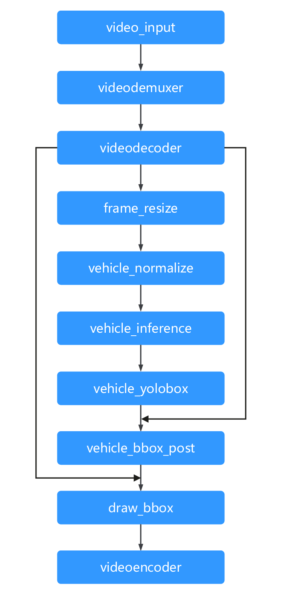
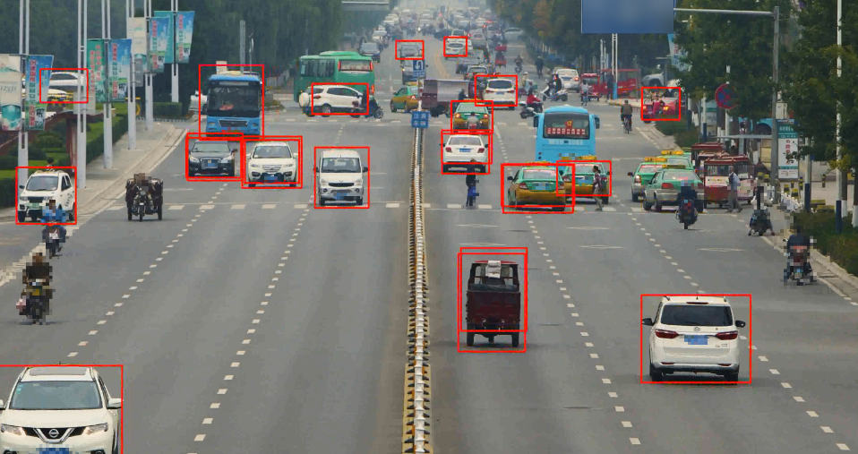

车辆检测
流程图
车牌检测流程如下图所示，video_input 功能单元接收视频流，往下分别经过 videodemuxer和videodecoder功能单元，videodecoder功能单元输出image，image经过前处理，包含resize、normalize之后，送给模型（car_inference是一个yolov3模型），模型将推理得到的bbox结果传入后续的后处理功能单元进行处理（car_yolobox），可得到 最终的bbox框，将bbox框和videodecoder出来的image一同送入draw_bbox中，将绘制完bbox的image传入videoencoder，即得到带有检测框的视频。

上述提到的各个节点，在ModelBox中称为功能单元，模型图中的一个节点，编排功能单元构建运行图，运行图在ModelBox中的呈现形式为 toml文件。车辆检测运行toml文件内容如下：
[driver]
dir = ["drivers"]
[log]
level = "INFO"
[graph]
format = "graphviz"
graphconf = """digraph vehicle_detection {
node [shape=Mrecord]
video_input[type=flowunit, flowunit=video_input, device=cpu, deviceid=0, source_url="@SOLUTION_VIDEO_DIR@/test_video_vehicle.mp4"]
videodemuxer[type=flowunit, flowunit=video_demuxer, device=cpu, deviceid=0]
videodecoder[type=flowunit, flowunit=video_decoder, device=cpu, deviceid=0, queue_size=16, batch_size=5, pix_fmt=rgb]
frame_resize[type=flowunit, flowunit=resize, device=cpu, deviceid=0, queue_size=16, batch_size=5, interpolation=inter_nearest, image_height=480, image_width=800]
car_color_transpose[type=flowunit, flowunit=packed_planar_transpose, device=cpu, deviceid=0, queue_size=16, batch=5]
car_normalize[type=flowunit, flowunit=normalize, device=cpu, deviceid=0, queue_size=16, batch_size=5, standard_deviation_inverse="0.003921568627451, 0.003921568627451, 0.003921568627451"]
car_inference[type=flowunit, flowunit=car_inference, device=cuda, deviceid=0, queue_size=16, batch_size=5]
car_yolobox[type=flowunit, flowunit=car_yolobox, device=cpu, deviceid=0, queue_size=16, batch_size=5, image_height=1080, image_width=1920]
draw_bbox[type=flowunit, flowunit=draw_bbox, device=cpu, deviceid=0, queue_size=16, batch_size=5]
videoencoder[type=flowunit, flowunit=video_encoder, device=cpu, deviceid=0, queue_size=16, encoder=mpeg4, default_dest_url="rtsp://localhost/test"]
video_input:out_video_url -> videodemuxer:in_video_url
videodemuxer:out_video_packet -> videodecoder:in_video_packet
videodecoder:out_video_frame -> frame_resize:in_image
videodecoder:out_video_frame -> draw_bbox:in_image
frame_resize:out_image -> car_color_transpose:in_image
car_color_transpose:out_image -> car_normalize:in_data
car_normalize:out_data -> car_inference:data
car_inference:"layer15-conv" -> car_yolobox:"layer15-conv"
car_inference:"layer22-conv" -> car_yolobox:"layer22-conv"
car_yolobox:Out_1 -> draw_bbox:in_region
draw_bbox:out_image -> videoencoder:in_video_frame
}"""
toml构建图，定义节点和构建节点之间关系即可完成。输入配置在video_input中source_url中配置实际的视频所在路径，输出通过videoencoder输出rtsp流。
其中，[dirver]中dir的路径为，图中功能单元的so包或toml配置文件所在路径。
功能单元
推理功能单元配置如下：
[base]
name = "car_inference"
device = "cuda"
version = "1.1.2"
description = "a day car detection inference flowunit"
entry = "./vehicle_detection.engine"
type = "inference"
virtual_type = "tensorrt"
[config]
plugin = "yolo" #预置yolov3自定义插件
[input]
[input.input1]
name = "data"
type = "float"
[output]
[output.output1]
name = "layer15-conv"
type = "float"
[output.output2]
name = "layer22-conv"
type = "float"
运行示例
用ModelBox的modelbox-tool命令，可以启动运行图。命令如下：
modelbox-tool -verbose flow -run car_detection.toml
其中vehicle_detection.toml即为车牌检测的运行图，shell命令中为实际路径，运行环境中安装好EasyDarwin软件后，将 rtsp://localhost/video（localhost为你的ip）复制到网页中，即可打开浏览器，查看最后结果，示例结果如下：
